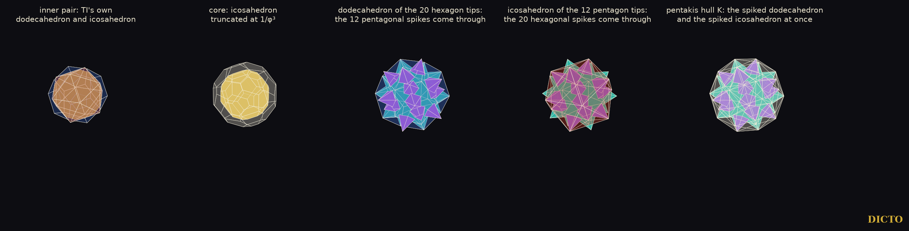
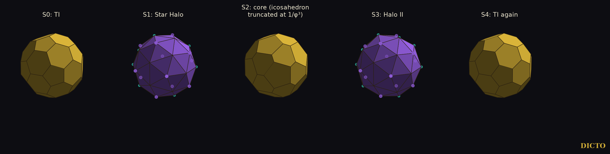

A doubling cycle and a golden cycle grown from the truncated icosahedron's own pyramids
A truncated icosahedron can be cut from its centre into pyramids, one on every face, as Aristotle's pyramids cut the Platonic solids. Turn the pyramids outwards and it grows spikes. Wrap the spikes and the solid comes back, larger.
The truncated icosahedron appears twice in DICTO's work. In the Spheres of Dharma (#23) and in the twelve-station golden cycle (#54) it is a station between the rectified truncated icosahedron and the Hecatodihedron; in the path between the queens (#76) its four-dimensional counterpart, the bitruncated 600-cell, is built from 120 truncated icosahedra and 600 truncated tetrahedra. Paper #77 showed that, face to face, the five Platonic face pyramids keep to their solids. DICTO proposed the same cut for TI, and then a new golden cycle that begins, like his Cleo star (#35), with the pyramids turned outwards. This paper carries out both.
With edge 1, the truncated icosahedron TI (corners: the even permutations of (0, ±1, ±3φ), (±1, ±(2 + φ), ±2φ), (±φ, ±2, ±(2φ + 1)), halved) has volume (125 + 43√5)/4. Cut from its centre it falls into the pyramids of Table 1, exactly.
| Pyramid | Count | Height | Volume | Base-edge angle |
|---|---|---|---|---|
| TI, pentagonal | 12 | √(1250 + 410√5)/20 = 2.32744 | 1.33477 | 73.528° (cos² = (5 + √5)/90) |
| TI, hexagonal | 20 | √(42 + 18√5)/4 = 2.26728 | 3√(14 + 6√5)/8 = 1.96353 | 69.095° on every edge (cos² = 1/2 − √5/6): θI/2 |
| truncated tetrahedron, triangular | 4 | 5√6/12 = 1.02062 | 5√2/48 | 74.207° (cos² = 2/27) |
| truncated tetrahedron, hexagonal | 4 | √6/4 = 0.61237 | 3√2/8 | 35.264° on every edge: α/2 |
Table 1. The face pyramids of the two midpoint cells of #76 (edge 1). The base-edge angle is the angle between the base and the plane through the edge and the centre; θI = arccos(−√5/3) is the icosahedron's dihedral angle and α = arccos(1/3) the tetrahedron's. Both pyramids of TI have the same side triangle (legs √(58 + 18√5)/4 = 2.47802, the radius of TI).
Proposition 1. The hexagonal pyramid of TI is the Cleo-Icos of edge 3 with its three corners cut off; the truncated tetrahedron's hexagonal pyramid is the tetrahedron's face pyramid of edge 3 with its corners cut off. Proof. Truncating a solid keeps the planes of its faces: the hexagons of TI lie in the face planes of the icosahedron of edge 3, and the truncated tetrahedron's in those of the tetrahedron of edge 3. A face pyramid's angle along an edge of its base depends only on the face plane and the edge, so the angles are those of the Cleo-Icos and of the tetrahedron's pyramid (#44, #77). ∎
Base to base, the hexagonal pyramid of TI on the truncated tetrahedron's makes a hexagonal bipyramid of height (√6 + √(42 + 18√5))/4 = 2.87966: the meeting of the two midpoint cells of #76, as the tetrahedron's pyramid meets the octahedron's in the octet. Face to face the four pyramids keep to their solids, as in #77: round a side edge only one pentagonal and two hexagonal pyramids close (111.381° + 2 × 124.309° = 360°; for the truncated tetrahedron 67.115° + 2 × 146.443°), and the angles round an edge exclude TI from every face-to-face tiling by the two solids (the only edge star of up to five solids is 2 × 109.47° + 2 × 70.53° of truncated tetrahedra; the closest one with TI misses by 1.57°).
Turn every pyramid outwards and the solid becomes a star. The tips of the star mark the faces of a larger one, and the space between them fills with small tetrahedra of only three kinds.
Let cf be the centre of face f of TI (it is the foot of the perpendicular from the centre, because the faces are regular). For s > 1 the TI Star TI(s) (the Double TI Star for s = 2, the Golden TI Star for s = φ; DICTO's names, after his Cleo star) is TI with a pyramid over every face whose tip is s·cf; its spikes are the inward pyramids scaled in height by s − 1, so TI(s) has volume s·TI. Let K(s) be the convex hull of the 32 tips (the Star Halo, DICTO's name, Section 6), and s·TI the truncated icosahedron scaled by s; its face centres are exactly the tips.
Theorem. For s = 2 and for s = φ: (a) TI ⊂ TI(s) ⊂ K(s) ⊂ s·TI, and K(s) is a pentakis dodecahedron: 32 corners (the tips), 60 congruent triangles, each over one corner of TI. (b) The layer K(s) minus TI(s) is filled exactly by 60 corner tetrahedra, each a corner v of TI with the three tips over the faces at v, and 90 edge tetrahedra, each an edge vw of TI with the two tips over the faces at vw (60 over pentagon–hexagon edges, 30 over hexagon–hexagon edges). (c) The layer s·TI minus K(s) is filled exactly by 60 corner tetrahedra (a corner of s·TI and the three face centres there) and 90 edge tetrahedra (an edge of s·TI and the two face centres beside it). (d) Scaling by s repeats the turn without end, so the four stations form a cycle: for s = 2 a doubling cycle, for s = φ a golden cycle.
| Station or piece | Count | Doubling, s = 2 | Golden, s = φ |
|---|---|---|---|
| TI | 1 | 1 | 1 |
| TI Star TI(s) | 1 | 2 | φ = 1.618034 |
| pentakis hull K(s) | 1 | 6.067694 | 3.212896 |
| s·TI (next turn) | 1 | 8 | φ³ = 4.236068 |
| layer 1: corner tetrahedron | 60 | 0.041839 | 0.014743 |
| layer 1: edge tetrahedron, pentagon–hexagon | 60 | 0.017132 | 0.007892 |
| layer 1: edge tetrahedron, hexagon–hexagon | 30 | 0.017647 | 0.007892 |
| layer 2: corner tetrahedron | 60 | 0.017451 | 0.009240 |
| layer 2: edge tetrahedron, pentagon–hexagon | 60 | 0.008725 | 0.004620 |
| layer 2: edge tetrahedron, hexagon–hexagon | 30 | 0.012058 | 0.006385 |
Table 2. Volumes as multiples of TI. One turn has 1 + 32 + 150 + 150 = 333 pieces (the core, the spikes and the two layers). In the frame of #54 (edge of TI 1/φ), the hull K(2) has volume 79.193496 and the layer-1 pentagon–hexagon tetrahedron 0.2236068, agreeing with 30 + 22√5 and √5/10 to nine digits; for s = φ both layer-1 edge tetrahedra have the same volume, and the layer-2 hexagon–hexagon tetrahedron 0.0833333, 1/12 to nine digits. These closed forms are recognised from the numbers, not proved.
Proof and checks. The tips are s times the face centres, so they are the face centres of s·TI, which gives (a) together with the computed hull: its 60 face planes are all at one distance, each through one pentagon tip and two hexagon tips over one corner of TI. Each corner tetrahedron of layer 1 has its base on a face of K(s) and its apex at the corner of TI below; each edge tetrahedron is bounded by the two spike faces over its edge and by two faces of the neighbouring corner tetrahedra; so the pieces close round every spike edge and every hull edge. The volumes of each layer add up to the layer to 10−12 for both s (corners exact in ℚ(√5); volumes in double precision), and all 333 pieces of a turn, the core and the spikes are pairwise free of overlap by the separating-axis test (faces and edge cross products of every pair of convex pieces whose bounding spheres meet). This is (b) and (c); (d) is the scaling. ∎

Inside each turn two pairs of Platonic shells appear, a dodecahedron and an icosahedron each time, and between them a new truncated icosahedron.
A turn has three sets of points, the 60 corners of TI, the 12 pentagon tips and the 20 hexagon tips, and two sets of planes, the 12 pentagon and the 20 hexagon planes of TI. The 12 pentagon tips are the corners of a regular icosahedron Ip, the 20 hexagon tips those of a regular dodecahedron Dh; the pentagon planes of TI bound a regular dodecahedron DTI, its hexagon planes a regular icosahedron ITI (the icosahedron of edge 3 of Proposition 1).
Proposition 2 (the solids of one turn). For s = 2 and s = φ:
(a) The convex solids of the turn nest as TI = DTI ∩ ITI ⊂ DTI, ITI ⊂ Ip ∩ Dh ⊂ Ip, Dh ⊂ K ⊂ s·TI = s·DTI ∩ s·ITI. The two solids of each pair cross each other; TI with its 12 pentagonal spikes lies in Ip, TI with its 20 hexagonal spikes in Dh, and the TI Star in K; all 32 tips lie outside DTI and ITI.
(b) The 12 pentagonal spikes pierce the faces of Dh and the 20 hexagonal spikes those of Ip, so K is at once Dh with 12 pentagonal pyramids and Ip with 20 triangular pyramids: a spiked dodecahedron and a spiked icosahedron.
(c) The core Ip ∩ Dh has 12 pentagons and 20 hexagons and all its corners on one sphere; its hexagons have alternating edges in the ratio √5, so it is the icosahedron truncated at 1/φ³ of each edge (the uniform TI is truncated at 1/3). It has the same shape in both cycles.
(d) DICTO's growth rule of The Golden Cycle (each corner of a solid gives a face plane of the next) carries K to s·TI, Ip to s·DTI and Dh to s·ITI: the outer pair of one turn gives the inner pair of the next.
(e) The list is complete in three senses: it holds every convex hull of a union of the three point sets and every intersection of these hulls and of the plane sets; of the 256 solids made of whole symmetric families of the turn's pieces (TI always included), only TI, K and s·TI are convex, and the hulls of all 256 are TI, Ip, Dh, K and s·TI; and one step of the growth rule from any solid of the list gives a solid of the list or of the next turn, except from TI, ITI and DTI.
| Solid | Double, s = 2 | Golden, s = φ |
|---|---|---|
| TI | 1 | 1 |
| TI with its 12 pentagonal spikes | 1.289707 | 1.179049 |
| TI with its 20 hexagonal spikes | 1.710293 | 1.438985 |
| TI Star | 2 | φ |
| inner icosahedron ITI (hexagon planes) | 1.065440 | 1.065440 |
| inner dodecahedron DTI (pentagon planes) | 1.265673 | 1.265673 |
| core Ip ∩ Dh | 4.103174 | 2.172666 |
| outer icosahedron Ip (pentagon tips) | 4.626695 | 2.449874 |
| outer dodecahedron Dh (hexagon tips) | 4.697099 | 2.487154 |
| K, the pentakis hull | 6.067694 | 3.212896 |
| s·TI | 8 | φ³ |
Table 3. The eleven solids of one turn, as multiples of TI. Inclusions were tested for every pair (all corners of one inside every face plane of the other, to 10−9); the edge ratio of the core is √5 to 10−8 in both cycles; the growth-rule identities hold to 10−9 in volume (study scripts/stations.py, inner_pair.py, families.py, rule_chains.py). The inner pair depends only on TI, so it is the same in both cycles; the outer solids scale with s.

Where the list stops. Repeated, the growth rule leaves the cycle in two side chains that never land on a station: from TI it alternates TI-shaped solids and Catalan pentakis dodecahedra, growing by 1.172168 in length every two steps; from ITI and DTI it alternates icosahedra and dodecahedra, growing by 1.583592 every two steps. Neither factor is a power of s, so these chains wind through the turns without closing. The turn passes through both Platonic solids of five-fold symmetry twice; the dodecahedra are the shape of the Red Queen's core cell (#65), and whether they can be matched to her nine layers is left open.
Reflect every solid of the turn in a sphere, corners to faces and faces to corners: the middle of the turn comes back as itself.
Proposition 3 (the polar cycle). For s = 2 and s = φ, let ρ² = R(Ip)·r(Dh), the circumradius of the outer icosahedron times the inradius of the outer dodecahedron (ρ = 1.337 times the radius of TI for s = φ, 1.653 for s = 2). In the sphere of radius ρ the outer icosahedron and the outer dodecahedron are polar to each other, and so are the Star Halo K (Section 6) and the core: the four middle solids of the turn are their own polar set. The polars of TI, ITI and DTI, scaled by 1/s into the same turn, are a Catalan pentakis dodecahedron and a second icosahedron and dodecahedron, and the two cycles nest together in one space:
TI ⊂ ITI ⊂ I*, TI ⊂ DTI ⊂ D*, I*, D* ⊂ Catalan pentakis ⊂ core ⊂ Ip, Dh ⊂ K ⊂ s·TI,
where I* and D* are the polar icosahedron and dodecahedron (each pair crosses itself, and ITI, DTI cross the polar solid of the other kind where noted in the data): fourteen solids per turn, the four middle ones shared.
The equality ρ² = R(Dh)·r(Ip) holds as well, because the icosahedron and the dodecahedron have the same ratio of circumradius to inradius; that is why one sphere serves both. In the polar cycle TI's place is taken by the Catalan pentakis dodecahedron, the polar of the uniform truncated icosahedron. Exact order and every inclusion: study data merged-turn.json; the polar identities hold to 10−8 in volume.
Treat the hull of the star as a new core, spike it, and wrap it again. After four such steps the truncated icosahedron comes back.
DICTO named K, the hull of the 32 tips, the Star Halo. Its 60 triangles all lie at one distance from the centre, so when its own face pyramids are turned outwards (tips at s times the foot of each face's perpendicular) the tips land on a scaled copy of its polar, which is the core shape of Section 4. Repeating the step gives the star chain: each solid's spike tips make the next.
Proposition 4 (the star chain). Let S0 = TI and Sn+1 the hull of the spike tips of Sn, the tips at s times the feet of the perpendiculars to its faces. For s = φ and s = 2: S1 is the Star Halo, S2 has the shape of the core (the icosahedron truncated at 1/φ³, edges in the ratio √5), S3 is a second non-Catalan pentakis dodecahedron (placeholder name Halo II), and S4 has the shape of TI again, so the chain repeats with period four. Every step is one turn of a cycle of the kind of the Theorem: Sn ⊂ star ⊂ Sn+1 ⊂ s·Sn, the star of volume s times Sn, both layers filled exactly by pyramids over the corners of Sn and of s·Sn (tetrahedra over three-fold corners, pentagonal and hexagonal pyramids over five- and six-fold ones) and tetrahedra over the edges; 333 pieces per turn from a truncated icosahedron, 305 from a pentakis dodecahedron.
| Step | Solid | Corners · faces | Edge ratio | Hull / Sn, s = φ | Hull / Sn, s = 2 |
|---|---|---|---|---|---|
| S0 | TI | 60 · 12 pentagons + 20 hexagons | 1 | 3.212896 | 6.067694 |
| S1 | Star Halo | 32 · 60 triangles | 1.098186 | 3.376409 | 6.376497 |
| S2 | core shape | 60 · 12 pentagons + 20 hexagons | √5 | 3.226814 | 6.093979 |
| S3 | Halo II | 32 · 60 triangles | 1.127322 | 3.452883 | 6.520921 |
| S4 | TI again | 60 · 12 pentagons + 20 hexagons | 1 | 3.212896 | 6.067694 |
Table 4. The star chain. Edge ratio: longest over shortest edge. Volumes of each step's hull over the solid it grows from; the star is always s times the solid. Shapes compared up to scale by corner radii and edge lengths; fills exact to 10−9 in volume at every step; no overlapping pair among the 333 or 305 pieces of steps 0 to 3 (separating-axis test). After four steps the radius has grown by 4.944274 (s = φ) and 11.541757 (s = 2); neither is a power of s, so the chain returns to the shape of TI but not to a golden or doubled copy of it (study scripts/halo_cycle.py, star_chain.py; data/halo-cycle-*.json, star-chain-*.json).

Mirroring a face pyramid in its face puts the tip at twice the face centre: that is the doubling cycle, and the TI Star is then exactly twice TI, as DICTO's Cleo star, the icosahedron with its twenty Cleo-Icos turned outwards, is twice the icosahedron (#35, #54). The golden ratio enters when the spikes are 1/φ of the pyramids' height. The two cycles behave differently from the Cleo star in one respect: the Cleo star's twenty tips are the corners of a dodecahedron, D′, which is how it joins DICTO's twelve-station cycle; the 32 tips of the TI Star lie on two spheres (the pentagon tips 1.0265 times further out than the hexagon tips, the inverse of the Catalan pentakis dodecahedron's proportion), and they touch no station of the twelve-station cycle at any scale φk, k = −2, …, 4 (study data contacts.json). The TI Star therefore starts a cycle of its own, beside the golden cycle rather than on it.
DICTO's idea holds both ways. The core of TI fills exactly with pentagonal and hexagonal pyramids, and the hexagonal ones carry the Cleo-Icos's angle. Turned outwards they make a spiked core from which two new cycles grow, a doubling one and a golden one, each repeating without end with one core, 32 spikes and 300 tetrahedra of six kinds per turn. Inside every turn the two Platonic solids of five-fold symmetry appear twice, as an inner and an outer pair, with a new core between them, the icosahedron truncated at 1/φ³. The middle of the turn is its own polar, and spiking each hull in turn closes into a star chain of four shapes: the truncated icosahedron, the Star Halo, the core and Halo II.
Sources checked (30 October 2026). Reference library (ask-library): "truncated icosahedron face pyramids decomposition from the centre space filling truncated tetrahedron" (returned Richter-Gebert 2026, "An almost trivial observation about the icosahedron"; Wikipedia, "Rhombic dodecahedron"; Sommerville 1922; Messer 1995; Kepler 1619 p. 271; Al-Siyabi, Koca and Koca 2020 p. 6, two copies; Goldberg 1937 p. 1; none treats the face pyramids of TI or cycles through them). DICTO's papers #23, #35, #44, #54, #76, #77, cited for their results. The Kleetope construction and the pentakis dodecahedron are cited for their well-known content, not re-read.
Data and code. Study 2026-10-30-ti-pyramids: scripts/pyramids.py (exact pyramids, angles, side-edge wedges, edge stars), scripts/figure.py, data/pyramids.json. Study 2026-10-30-spiked-ti: scripts/spiked.py (spikes, hull, stations), scripts/contacts.py (contacts with the twelve stations at golden scales), scripts/layers.py (SCALE=2 or SCALE=phi: both layers, volumes, overlaps), scripts/stations.py, inner_pair.py, families.py (all 256 unions of whole families), rule_chains.py (the eleven solids, their inclusions and the growth rule), scripts/figure_both.py, scripts/figure_turn.py; data/layers-2.json, data/layers-phi.json, data/stations-turn.json, inner-pair.json, families-2.json, families-phi.json, rule-chains.json, polar.json, polar-sphere.json, merged-turn.json, halo-cycle-phi-phi.json, halo-cycle-2-2.json, star-chain-phi.json, star-chain-2.json, data/contacts.json, data/stations-exact.json (from study 2026-10-25-gnomon-shapes).